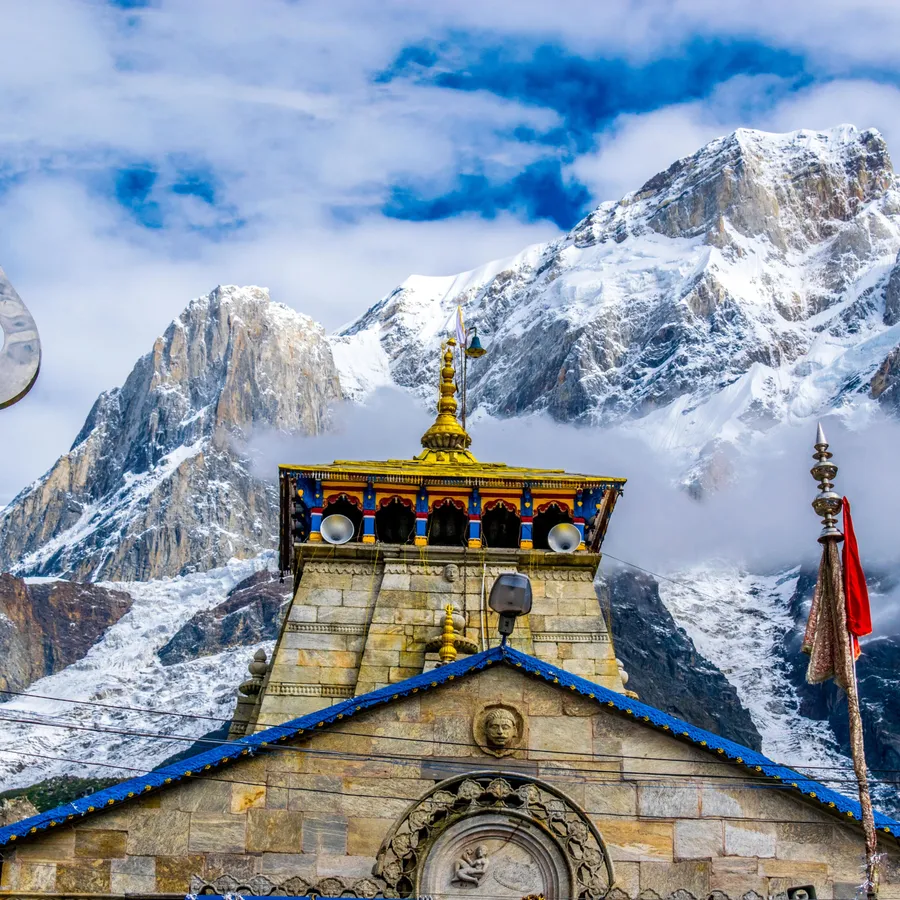

Situated in the Himalayan state of Uttarakhand, Kedarnath is a sacred pilgrimage site and one of the Char Dham destinations in Hinduism. Nestled amidst the breathtaking peaks of the Garhwal Himalayas, Kedarnath is revered as the abode of Lord Shiva, one of the principal deities in Hinduism. The focal point of Kedarnath is the ancient Kedarnath Temple, dedicated to Lord Shiva in his form as Kedareshwar. Perched at an altitude of 3,583 meters (11,755 feet) above sea level, the temple is surrounded by snow-capped mountains, pristine glaciers, and lush meadows, creating a serene and spiritually charged atmosphere. 
Located just behind the revered Kedarnath Temple lies the sacred resting place of Adi Shankaracharya, the eminent saint credited with establishing the four sacred dhams in India, integral to Hindu pilgrimage. This renowned Hindu philosopher achieved nirvana at a remarkably young age of 32 and, according to legend, merged with the very land he tread upon. The Shankaracharya Samadhi in Kedarnath, drawing pilgrims in the thousands, stands as a significant tourist attraction.
Situated at a distance of 500 m from the Kedarnath Temple on the southern side, Bhairavnath Temple is enshrined by the revered Hindu God - Lord Bhairav. It is perched on top of a hillock and offers magnificent views of the surrounding Himalayas and the entire Kedarnath valley below. Lord Bhairav is believed to be the main gana of Lord Shiva and hence the temple is all the more important. The enshrining deity of the temple is also known as Kshetrapal or the guardian of the region, has a Trishul for a weapon and a dog as his vehicle
Sonprayag, situated in the Rudraprayag district of Uttarakhand, India, holds profound religious significance as it marks the sacred confluence of two mighty rivers, Basuki and Mandakini. Nestled amidst the picturesque Himalayan landscape, this tranquil hamlet serves as a pivotal point for pilgrims embarking on the sacred Char Dham Yatra, which includes the revered shrines of Kedarnath and Badrinath..
Contact us:xxxxxxxxx
Email:youme1211@gmail.com